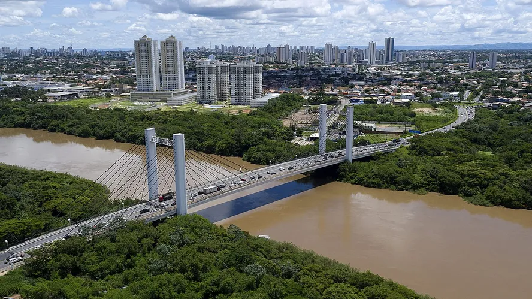

Mato Grosso é um estado com grande biodiversidade, destacando-se no Pantanal e cerrado. Sua economia é centrada na agropecuária, especialmente na produção de grãos e carne. A cultura local é influenciada por tradições indígenas e sertanejas.
 VOLTAR